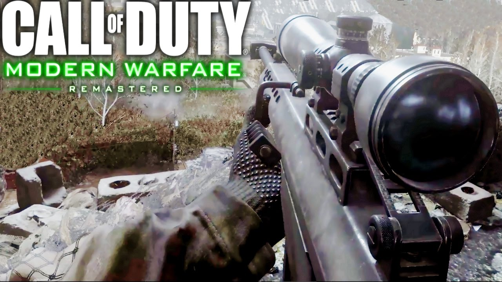

A personal computer game (also known as a computer game or PC game) is a game played on a personal computer, rather than on a video game console or arcade machine. Computer games have evolved from the simple graphics and gameplay of early titles like Spacewar, to a wide range of more visually advanced titles.
Basically there are four types of computer games:
| Warcraft | Strategic game | Call of Duty | First person shooter |  |